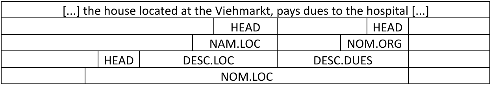
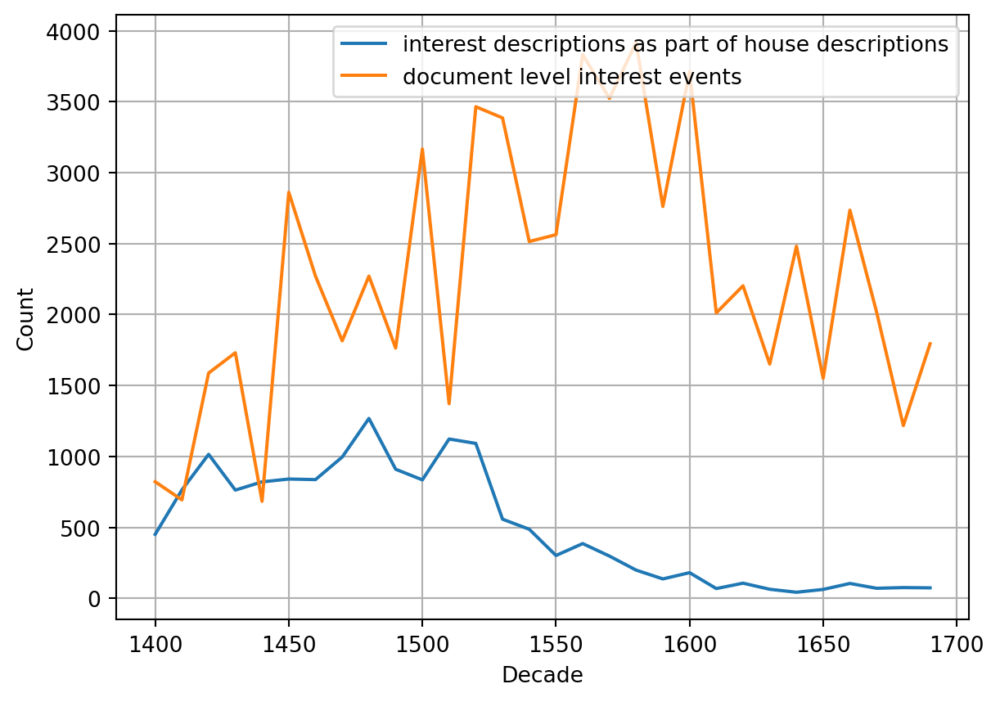
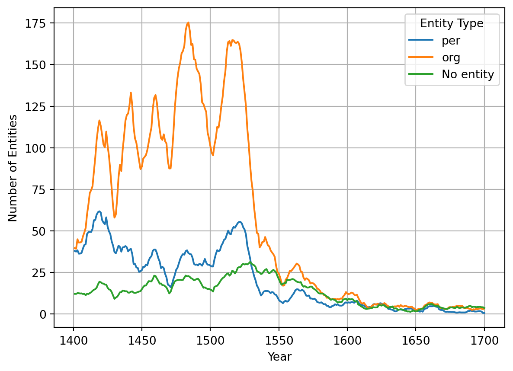
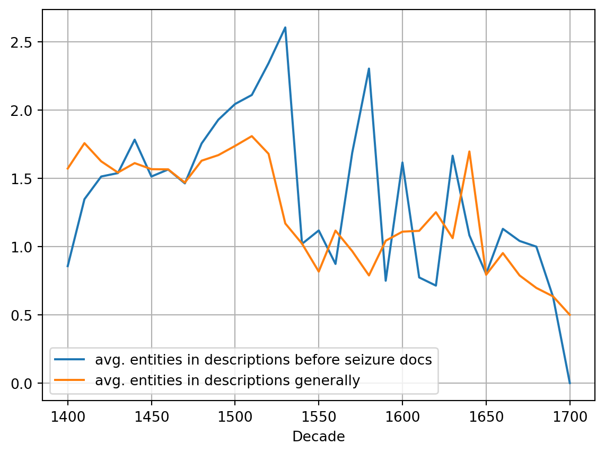
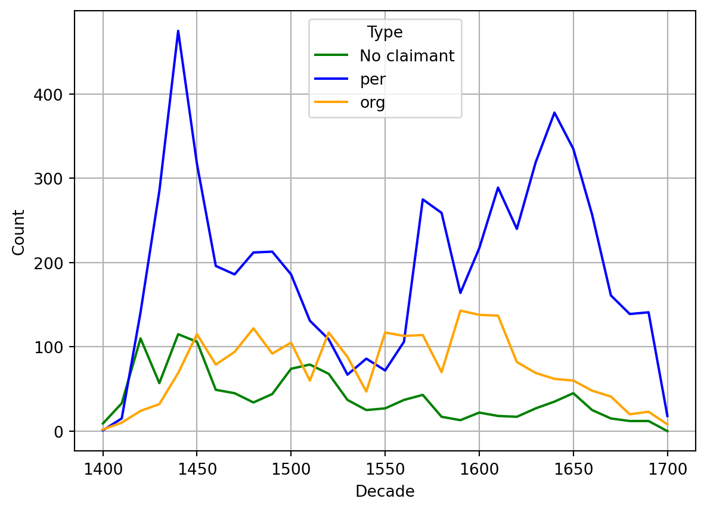

From record cards to the dynamics of real estate transactions: Working with automatically extracted information from Basel’s historical land register, 1400-1700
This paper investigates the role of real estate in premodern Basel’s economy using the Historical Land Register. The register, with over 120,000 file cards, integrates various archival sources, revealing insights into real estate interests and their economic impact. We apply machine learning techniques to extract information, including entities and events, to analyze texts from handwritten records. We examine whether properties with higher interest burdens faced more frequent seizure procedures and which indicators may be of use to quantify interest burdens. This research aims to better understand the relationship between real estate interests and economic practices in historical Basel, while acknowledging and reflecting upon potential biases and limitations in the archival data and machine learning results and how it influences historical research practices. We find that while flawed and incomplete, we can make use of artificially created data to increase our understanding of these economic relationships by taking care which kind of information we rely on.
Keywords
machine learning, information extraction, digital history, administrative records
Introduction
The role of real estate in a premodern urban economy is generally underrated due to a lack of specific research and the disparity of sources. While aspects such as the commodification of real estate and its role as collateral in credit contracts have been studied, combining different aspects from various sources into one perspective remains challenging. The Historical Land Register of Basel, initiated in 1895 and developed over several decades1, offers a potential solution. It involved thorough research in Basel’s city archives, creating approximately 120,000 file cards with almost verbatim transcriptions of sources, organized by house and chronologically sequenced. This comprehensive register combines information from various corpora, providing an unparalleled wealth of data for the era. To extract relevant information from these handwritten cards, we use machine learning methods such as named entity recognition (NER) and event extraction on texts generated by handwritten text recognition (HTR) of the scanned cards. As this is work in progress, we focus on specific aspects of real estate’s role in Basel’s economy, particularly interests. Medieval Basel had a dense network of religious institutions with seigneurial rights on many houses, additionally acting as lenders in annuities. Post-Reformation, these institutions’ records were well-preserved in the city archives, dominating the Historical Land Register. We contrast this with descriptions of houses in civil court records, which often list beneficiaries or note the absence of interests. We will then explore the frequency of interest mentions for houses in connection with seizure procedures in the civil court, typically due to non-payment of interests. When combining different sources, we must carefully select and interpret results, considering possible biases like gaps in tradition, changing writing habits, and the specific methods used by the Land Register’s creators. Additionally, machine learning errors can distort findings. By acknowledging these biases, we can draw more accurate conclusions about historical developments and changes.
After a short introduction on methodology, the following research questions will be addressed in this extended abstract:
What can we discover about the interest burden on real estate?
Did a higher burden of interest lead to an increased number of seizure procedures?
Who made use of seizure procedures and how does this use relate to interest claims?
Information Extraction
To facilitate the automated extraction of information, our team manually annotated 640 documents according to the BeNASch annotations guidelines.2 BeNASch is a nested annotation system which represents information about entities, relations and events. Annotation work was done using the INCEpTION platform (Klie et al. 2018).
Entity Annotation
Entities are classified into the categories PER (person), LOC (location), ORG (organization) or GPE (geo-political entity) and consist of an outer span and the head-element which marks the core. Entities are annotated in a nested manner, meaning another entity may be marked inside an entity. Entities may also contain Attributes and Descriptors, further describing them. The annotation of quantitative values, such as dates and money, is also part of the entity annotation process.

Figure 1: Example annotation of a strongly simplified house description.
Event Annotation
An event is usually represented by a trigger phrase, one or multiple actors and objects (roles) and sometimes modifiers which add additional information (e.g. the information why an interest must be paid). For example, a document describing a seizure procedure will usually have a trigger phrase like “gefröhnt” and the roles of a claimant, the seized object and the reason for the seizure, an event describing the missed interests. Annotation may then look like the following example:
<claimant> The administrator of the Klingenthal monastery </claimant> has <trigger> seized </seized> <seized_obj> Hans Müllers house at the Viehmarkt </seized_obj> because of <reason> missed dues, as aforementioned monastery gets 3 fl. yearly interest from it </reason>.
Events are not only linked to the entity annotations by their roles, but descriptors and entity mentions can also imply an event. For example, a descriptor with class dues also implies a dues/interest event.
Automated Extraction
We model both, entity and event extraction, in a two-step sequence tagging tasks. We utilize the FlairNLP framework (Akbik, Blythe, and Vollgraf 2018) to train our models, splitting our annotated data in an 80/10/10 split into training, validation and test data. For both steps we finetuned the german-language contextual character embedding model provided by the Flair framework (Akbik et al. 2019) using all available text from the Historical Land Records.
In the first step, we use a model to annotate all information that can be represented as spans of text which includes entity mentions, descriptors and values, but also event trigger phrases and modifiers. We use the process described in (Prada Ziegler 2024) to facilitate nested sequence tagging, but extend this method by adding a prefix and suffix to each sample to inform which annotation level we’re currently on. In the second step, we apply the role detection. For this task, we generate one sample for each trigger in our training set. The sample only includes the text of the immediate annotation level where the trigger is nested within. E.g. in the seizure example above, this would be the full document, as the trigger is found on document level, but the dues event (in the DESC.DUES) in the entity annotation example would only include the text of the descriptor. We again include a prefix and suffix to mark the annotation level and pretag the text by inserting the recognized spans from step 1 by putting a prefix and suffix around them. To ensure the system focuses the correct trigger during training and inference, we set the prefix and suffix annotation for all other triggers in the same sample to “INACTIVE”. This enables our system to learn which entities have roles corresponding to which trigger.3
As our annotated dataset is very small, the extraction performance for many classes cannot be properly evaluated. For the classes relevant to this study, we did additional evaluation based on the data outside our ground truth, scores will be reported whenever relevant in the following chapters.
Analysis
Measuring interest burden on real estate
The obvious indicator to see what amount of interest a property is burdened with are description of interests. We may find these in different places: In the form of lists kept by different institutions which received interest, as part of the description of properties when they are mentioned in the documents, most often when a property is sold, and whenever an annuity is established. The lists of interest payments are problematic to use as they take the perspective of the beneficiary of the interest and do not mention if that property is also burdened with interest by other institutions or persons. The documents tracking lending of annuities would work, but their recognition by our automated system is still lacking. The descriptions of properties are thus a good choice, they are well detected by our automated annotation and contain information about all beneficiaries.
Code
import pandas as pdimport matplotlib.pyplot as plt# Load the CSV filefile_path ='./data/3_viz.csv'# Update this with the actual file path if necessarydata = pd.read_csv(file_path)# Plot the 'Description of Dues' lineplt.plot(data['decade'], data['interest descriptions as part of house descriptions'], label='interest descriptions as part of house descriptions')# Plot the 'Due-Events at Document Level' lineplt.plot(data['decade'], data['document level interest events'], label='document level interest events')# Add labels and titleplt.xlabel('Decade')plt.ylabel('Count')plt.legend()# Add grid for better readabilityplt.grid(True)# Save the plot as an image fileplt.savefig("./images/fig_3.png")# Show the plotplt.show()

Figure 2: Comparison between frequency of descriptions of interest as part of house descriptions and other contexts, such as institutional records recording received interest. Note that even though received interests remain steady, interest descriptions in house descriptions vanish with time. Results are bucketed by decade.
We consider three ways to measure the burden of interest. First, we could use the absolute number of descriptions, but this number is unreliable, as there is a trend to not describe the interest anymore in later documents (see Figure 2). Second, we could try to use the monetary values mentioned in the descriptions. Here we encounter multiple problems: Numbers suffer from more HTR errors than other parts of the documents and are thus less reliable in general. Additionally a number of different currencies are in use, which would need conversion to a single value, as well as payments in kind. Finally our automated system cannot differentiate between different reasons for interest at the moment, so we wouldn’t know if a value is paid per year or only in case of an exchange of property ownership (“zu erschatz”). We settled using the number of beneficiaries to determine the burden of rent. Any entity found in a house description is classified as a beneficiary (we evaluated this to be true in 98% of cases based on 100 samples, with the true false positives being caused by errors in the named entity recognition process). Figure 3 shows the absolute numbers of organizations and persons recognized as receivers of interest in house descriptions over time.
Code
import pandas as pdimport matplotlib.pyplot as plt# Load the CSV filefile_path ='./data/3_4_viz.csv'# Update this with the actual file path if necessarydata = pd.read_csv(file_path)# Group by 'date' and 'entitytype' and count the number of occurrencesgrouped_data = data.groupby(['date', 'entitytype']).size().unstack(fill_value=0)# Apply rolling window of 11 years (5 years before, the current year, and 5 years after)rolling_window =11grouped_data_rolling = grouped_data.rolling(window=rolling_window, min_periods=1, center=True).mean()# Plot the data#plt.figure(figsize=(10, 6))# Plot each entity typefor entity_type in ['per', 'org', 'keine']:if entity_type in grouped_data_rolling.columns: plt.plot(grouped_data_rolling.index, grouped_data_rolling[entity_type], label=entity_type if entity_type !="keine"else"No entity")# Add labels and titleplt.xlabel('Year')plt.ylabel('Number of Entities')plt.legend(title='Entity Type')# Show the plotplt.grid(True)plt.savefig("./images/fig_4.png") # Save the plot as an image fileplt.show() # Display the plot

Figure 3: Entities mentioned in descriptions of interests within house descriptions by class (5-year gliding window).
How seizures relate to burden of interest
Since the 1420ies, seizure procedures obtained their own series in the city court records. These procedures could be applied in case of arrears in real-estate-related annuities or other interests, allowing the claimant to take the house into his possession after confirming his claim on three occasions. It meant no automatism of confiscation, but rather a gradually increased pressure on house owners to pay their due – actual transfer of ownership was much rarer than the high number of seizure procedures would suggest. Our model is very reliable when it comes to extracting seizure events. In a sample of 100 automatically identified seizures, none of them were false positives. We did not conduct a large enough evaluation to calculate how many seizures we miss currently, but from smaller checks, we’re confident this number is very low.
Code
import pandas as pdimport matplotlib.pyplot as plt# Load the CSV file while skipping the first row of headersfile_path ='./data/4_5_viz.csv'# Update this with the actual file path if necessarydata = pd.read_csv(file_path, skiprows=1, header=None)# Assign meaningful column namesdata.columns = ['Decade_nice', 'Decade', 'no_of_seizures', 'no_of_docs_in_10_years', 'no_of_docs_with_desc_tax', 'no_of_entities_org_per', 'entities_desc_tax', 'entities_per_document', 'unused1', 'documents_per_decade', 'documents_with_desc_tax_per_decade', 'entities_per_decade', 'entities_desc_tax_2']# Plot the 'entities_desc_tax' line (column G, index 6)plt.plot(data['Decade'], data["entities_desc_tax"], label='avg. entities in descriptions before seizure docs')# Plot the 'entities_desc_tax_2' line (column M, index 12)plt.plot(data['Decade'], data["entities_desc_tax_2"], label='avg. entities in descriptions generally')# Add labels and titleplt.xlabel('Decade')plt.legend()# Add grid for better readabilityplt.grid(True)# Save the plot as an image fileplt.savefig("./images/fig_5.png")# Show the plotplt.show()

Figure 4: Proportion of entities mentioned per interest description, comparison between houses in seizure procedures and all houses.
Since seizure procedures were linked to interests, one could expect that interest descriptions would be more frequent in the years before the event. In fact, when comparing the 10 years before a seizure with all documents of the same decade, the relative number of entities mentioned in interest descriptions shows no difference. Thus, owing interests in itself was no reason for increased numbers of seizures. When looking at the number of entities mentioned in each interest description, one sees that in certain periods of time, this proportion was much higher for documents leading to seizure events than in the average document (see Figure 4). This is the case mainly for the time period between 1480 and 1540.
In the next part, we contrast the entities in the interest descriptions to the entities taking part in seizures as claimants. To distinguish organizations from persons as parties in seizure procedures, we must look closer at the claimants. Court records generally mention the representative who actually appeared in court. As actor in the event, this person is identified as claimant by our event recognition model. Thanks to our nested entity recognition, we can identify if there is an organizational affiliation with an accuracy of 83.4%. Most of the errors are based on the non-recognition of formulas like “innamen von” (representing) that should be possible to include in future algorithms. Figure 5 shows that surprisingly and in contrast to the interest descriptions presented above, persons were much more present as claimants than organizations, even if we account for a considerable proportion of unrecognized organizational affiliations. Thus, either there were people acting as claimants for institutions that are not recognisable in the text as such, or organizations made in fact fewer use of the seizure procedure. One possible explanation could be that seigneurial interests were generally very low, but accounted for a lot of organizations mentioned in interest descriptions. These low interests might not have presented a problem for house owners – or their non-payment did not justify going to court for the institutions. In order to clarify such questions, further research would be necessary.
Code
import pandas as pdimport matplotlib.pyplot as plt# Load the CSV file while skipping the first row of headersfile_path ='./data/7_viz.csv'# Update this with the actual file path if necessarydf = pd.read_csv(file_path)plt.plot(df['Decade'], df['none'], label='No claimant', color='green')plt.plot(df['Decade'], df['PER'], label='per', color='blue')plt.plot(df['Decade'], df['ORG'], label='org', color='orange')# Formattingplt.xlabel('Decade')plt.ylabel('Count')plt.legend(title='Type')plt.grid(True)plt.show()

Figure 5: Entity types of claimants.
Conclusions
The relationship between interest burden and seizures proves to be investigable for the first time with our data. However, it is a complex relationship. The probability of a seizure increases with rising interest burden only during certain periods when seizures were infrequent. The many institutional creditors are reflected in the interest descriptions but not in the number of seizures. Further investigations need to determine whether institutions were generally more patient, whether this was due to lower interest burden, or whether our models fail to adequately capture institutions. This requires unambiguous identification of institutions, which still needs to be carried out.
On a methodological level, it becomes clear that successful recognition of entities and events allows for a large number of research questions based on a combination of different aspects that are brought together in the Historical Land Register. However, the recognition of events is still a work in progress, due to the often small number of annotated events in the training material. It needs to be evaluated and developed based on specific samples. As this process progresses, the quality of the analyses will enable a long-term perspective on the economic activities involving Basel properties.
References
Akbik, Alan, Tanja Bergmann, Duncan Blythe, Kashif Rasul, Stefan Schweter, and Roland Vollgraf. 2019. “FLAIR: An Easy-to-Use Framework for State-of-the-Art NLP.” In NAACL 2019, 2019 Annual Conference of the North American Chapter of the Association for Computational Linguistics (Demonstrations), 54–59.
Akbik, Alan, Duncan Blythe, and Roland Vollgraf. 2018. “Contextual String Embeddings for Sequence Labeling.” In COLING 2018, 27th International Conference on Computational Linguistics, 1638–49.
Klie, Jan-Christoph, Michael Bugert, Beto Boullosa, Richard Eckart de Castilho, and Iryna Gurevych. 2018. “The INCEpTION Platform: Machine-Assisted and Knowledge-Oriented Interactive Annotation.” In Proceedings of the 27th International Conference on Computational Linguistics: System Demonstrations, edited by Dongyan Zhao, 5–9. Santa Fe, New Mexico: Association for Computational Linguistics. https://aclanthology.org/C18-2002.
Prada Ziegler, Ismail. 2024. “What’s in an entity? Exploring Nested Named Entity Recognition in the Historical Land Register of Basel (1400-1700).” Zenodo. https://doi.org/10.5281/zenodo.11500543.
@misc{hitz2024,
author = {Hitz, Benjamin and Prada Ziegler, Ismail and Vonwiller,
Aline},
editor = {Baudry, Jérôme and Burkart, Lucas and Joyeux-Prunel,
Béatrice and Kurmann, Eliane and Mähr, Moritz and Natale, Enrico and
Sibille, Christiane and Twente, Moritz},
title = {From Record Cards to the Dynamics of Real Estate
Transactions: {Working} with Automatically Extracted Information
from {Basel’s} Historical Land Register, 1400-1700},
date = {2024-08-04},
url = {https://digihistch24.github.io/book-of-abstracts/submissions/462/},
langid = {en},
abstract = {This paper investigates the role of real estate in
premodern Basel’s economy using the Historical Land Register. The
register, with over 120,000 file cards, integrates various archival
sources, revealing insights into real estate interests and their
economic impact. We apply machine learning techniques to extract
information, including entities and events, to analyze texts from
handwritten records. We examine whether properties with higher
interest burdens faced more frequent seizure procedures and which
indicators may be of use to quantify interest burdens. This research
aims to better understand the relationship between real estate
interests and economic practices in historical Basel, while
acknowledging and reflecting upon potential biases and limitations
in the archival data and machine learning results and how it
influences historical research practices. We find that while flawed
and incomplete, we can make use of artificially created data to
increase our understanding of these economic relationships by taking
care which kind of information we rely on.}
}
For attribution, please cite this work as:
Hitz, Benjamin, Ismail Prada Ziegler, and Aline Vonwiller. 2024.
“From Record Cards to the Dynamics of Real Estate Transactions:
Working with Automatically Extracted Information from Basel’s Historical
Land Register, 1400-1700.” Edited by Jérôme Baudry, Lucas
Burkart, Béatrice Joyeux-Prunel, Eliane Kurmann, Moritz Mähr, Enrico
Natale, Christiane Sibille, and Moritz Twente. Digital History
Switzerland 2024: Book of Abstracts. https://digihistch24.github.io/book-of-abstracts/submissions/462/.
Source Code
---submission_id: 462categories: 'Session 7A'title: "From record cards to the dynamics of real estate transactions: Working with automatically extracted information from Basel's historical land register, 1400-1700"author: - name: Benjamin Hitz orcid: 0000-0002-3208-4881 email: benjamin.hitz@unibas.ch affiliations: - University of Basel - name: Ismail Prada Ziegler orcid: 0000-0003-4229-8688 email: ismail.prada@unibe.ch affiliations: - University of Basel - University of Bern - name: Aline Vonwiller orcid: 0009-0001-2098-9237 email: a.vonwiller@unibas.ch affiliations: - University of Baselkeywords: - machine learning - information extraction - digital history - administrative recordsabstract: | This paper investigates the role of real estate in premodern Basel’s economy using the Historical Land Register. The register, with over 120,000 file cards, integrates various archival sources, revealing insights into real estate interests and their economic impact. We apply machine learning techniques to extract information, including entities and events, to analyze texts from handwritten records. We examine whether properties with higher interest burdens faced more frequent seizure procedures and which indicators may be of use to quantify interest burdens. This research aims to better understand the relationship between real estate interests and economic practices in historical Basel, while acknowledging and reflecting upon potential biases and limitations in the archival data and machine learning results and how it influences historical research practices. We find that while flawed and incomplete, we can make use of artificially created data to increase our understanding of these economic relationships by taking care which kind of information we rely on.key-points: - The number of receivers of interest in a house description is likely a good indicator for the burden of interest on a property. - A nested annotation of entities can enable to more complex research questions. - Awareness of strengths and weaknesses of the automated system is important when methodology is chosen.date: 08-04-2024bibliography: references.bib---## IntroductionThe role of real estate in a premodern urban economy is generally underrated due to a lack of specific research and the disparity of sources. While aspects such as the commodification of real estate and its role as collateral in credit contracts have been studied, combining different aspects from various sources into one perspective remains challenging.The Historical Land Register of Basel, initiated in 1895 and developed over several decades^[See <https://dls.staatsarchiv.bs.ch/records/1016781>.], offers a potential solution. It involved thorough research in Basel’s city archives, creating approximately 120,000 file cards with almost verbatim transcriptions of sources, organized by house and chronologically sequenced. This comprehensive register combines information from various corpora, providing an unparalleled wealth of data for the era.To extract relevant information from these handwritten cards, we use machine learning methods such as named entity recognition (NER) and event extraction on texts generated by handwritten text recognition (HTR) of the scanned cards.As this is work in progress, we focus on specific aspects of real estate's role in Basel’s economy, particularly interests. Medieval Basel had a dense network of religious institutions with seigneurial rights on many houses, additionally acting as lenders in annuities. Post-Reformation, these institutions’ records were well-preserved in the city archives, dominating the Historical Land Register. We contrast this with descriptions of houses in civil court records, which often list beneficiaries or note the absence of interests. We will then explore the frequency of interest mentions for houses in connection with seizure procedures in the civil court, typically due to non-payment of interests.When combining different sources, we must carefully select and interpret results, considering possible biases like gaps in tradition, changing writing habits, and the specific methods used by the Land Register’s creators. Additionally, machine learning errors can distort findings. By acknowledging these biases, we can draw more accurate conclusions about historical developments and changes.After a short introduction on methodology, the following research questions will be addressed in this extended abstract:* What can we discover about the interest burden on real estate?* Did a higher burden of interest lead to an increased number of seizure procedures?* Who made use of seizure procedures and how does this use relate to interest claims?## Information ExtractionTo facilitate the automated extraction of information, our team manually annotated 640 documents according to the BeNASch annotations guidelines.^[<https://dhbern.github.io/BeNASch/>] BeNASch is a nested annotation system which represents information about entities, relations and events. Annotation work was done using the INCEpTION platform [@klie-etal-2018-inception].### Entity AnnotationEntities are classified into the categories PER (person), LOC (location), ORG (organization) or GPE (geo-political entity) and consist of an outer span and the head-element which marks the core. Entities are annotated in a nested manner, meaning another entity may be marked inside an entity. Entities may also contain Attributes and Descriptors, further describing them. The annotation of quantitative values, such as dates and money, is also part of the entity annotation process.{#fig-anno}### Event AnnotationAn event is usually represented by a trigger phrase, one or multiple actors and objects (roles) and sometimes modifiers which add additional information (e.g. the information why an interest must be paid). For example, a document describing a seizure procedure will usually have a trigger phrase like “gefröhnt” and the roles of a claimant, the seized object and the reason for the seizure, an event describing the missed interests. Annotation may then look like the following example:`<claimant> The administrator of the Klingenthal monastery </claimant> has <trigger> seized </seized> <seized_obj> Hans Müllers house at the Viehmarkt </seized_obj> because of <reason> missed dues, as aforementioned monastery gets 3 fl. yearly interest from it </reason>.`Events are not only linked to the entity annotations by their roles, but descriptors and entity mentions can also imply an event. For example, a descriptor with class dues also implies a dues/interest event.### Automated ExtractionWe model both, entity and event extraction, in a two-step sequence tagging tasks. We utilize the FlairNLP framework [@akbik2018coling] to train our models, splitting our annotated data in an 80/10/10 split into training, validation and test data. For both steps we finetuned the german-language contextual character embedding model provided by the Flair framework [@akbik2019flair] using all available text from the Historical Land Records.In the first step, we use a model to annotate all information that can be represented as spans of text which includes entity mentions, descriptors and values, but also event trigger phrases and modifiers. We use the process described in [@prada_ziegler_2024_11500543] to facilitate nested sequence tagging, but extend this method by adding a prefix and suffix to each sample to inform which annotation level we’re currently on.In the second step, we apply the role detection. For this task, we generate one sample for each trigger in our training set. The sample only includes the text of the immediate annotation level where the trigger is nested within. E.g. in the seizure example above, this would be the full document, as the trigger is found on document level, but the dues event (in the DESC.DUES) in the entity annotation example would only include the text of the descriptor. We again include a prefix and suffix to mark the annotation level and pretag the text by inserting the recognized spans from step 1 by putting a prefix and suffix around them. To ensure the system focuses the correct trigger during training and inference, we set the prefix and suffix annotation for all other triggers in the same sample to “INACTIVE”. This enables our system to learn which entities have roles corresponding to which trigger.^[See the appendix for an example in column format.]As our annotated dataset is very small, the extraction performance for many classes cannot be properly evaluated. For the classes relevant to this study, we did additional evaluation based on the data outside our ground truth, scores will be reported whenever relevant in the following chapters.## Analysis### Measuring interest burden on real estateThe obvious indicator to see what amount of interest a property is burdened with are description of interests. We may find these in different places: In the form of lists kept by different institutions which received interest, as part of the description of properties when they are mentioned in the documents, most often when a property is sold, and whenever an annuity is established.The lists of interest payments are problematic to use as they take the perspective of the beneficiary of the interest and do not mention if that property is also burdened with interest by other institutions or persons. The documents tracking lending of annuities would work, but their recognition by our automated system is still lacking. The descriptions of properties are thus a good choice, they are well detected by our automated annotation and contain information about all beneficiaries.```{python}#| label: fig-3#| fig-cap: "Comparison between frequency of descriptions of interest as part of house descriptions and other contexts, such as institutional records recording received interest. Note that even though received interests remain steady, interest descriptions in house descriptions vanish with time. Results are bucketed by decade."import pandas as pdimport matplotlib.pyplot as plt# Load the CSV filefile_path ='./data/3_viz.csv'# Update this with the actual file path if necessarydata = pd.read_csv(file_path)# Plot the 'Description of Dues' lineplt.plot(data['decade'], data['interest descriptions as part of house descriptions'], label='interest descriptions as part of house descriptions')# Plot the 'Due-Events at Document Level' lineplt.plot(data['decade'], data['document level interest events'], label='document level interest events')# Add labels and titleplt.xlabel('Decade')plt.ylabel('Count')plt.legend()# Add grid for better readabilityplt.grid(True)# Save the plot as an image fileplt.savefig("./images/fig_3.png")# Show the plotplt.show()```We consider three ways to measure the burden of interest. First, we could use the absolute number of descriptions, but this number is unreliable, as there is a trend to not describe the interest anymore in later documents (see @fig-3). Second, we could try to use the monetary values mentioned in the descriptions. Here we encounter multiple problems: Numbers suffer from more HTR errors than other parts of the documents and are thus less reliable in general. Additionally a number of different currencies are in use, which would need conversion to a single value, as well as payments in kind. Finally our automated system cannot differentiate between different reasons for interest at the moment, so we wouldn’t know if a value is paid per year or only in case of an exchange of property ownership (“zu erschatz”). We settled using the number of beneficiaries to determine the burden of rent. Any entity found in a house description is classified as a beneficiary (we evaluated this to be true in 98% of cases based on 100 samples, with the true false positives being caused by errors in the named entity recognition process). Figure [-@fig-4] shows the absolute numbers of organizations and persons recognized as receivers of interest in house descriptions over time.```{python}#| label: fig-4#| fig-cap: "Entities mentioned in descriptions of interests within house descriptions by class (5-year gliding window)."import pandas as pdimport matplotlib.pyplot as plt# Load the CSV filefile_path ='./data/3_4_viz.csv'# Update this with the actual file path if necessarydata = pd.read_csv(file_path)# Group by 'date' and 'entitytype' and count the number of occurrencesgrouped_data = data.groupby(['date', 'entitytype']).size().unstack(fill_value=0)# Apply rolling window of 11 years (5 years before, the current year, and 5 years after)rolling_window =11grouped_data_rolling = grouped_data.rolling(window=rolling_window, min_periods=1, center=True).mean()# Plot the data#plt.figure(figsize=(10, 6))# Plot each entity typefor entity_type in ['per', 'org', 'keine']:if entity_type in grouped_data_rolling.columns: plt.plot(grouped_data_rolling.index, grouped_data_rolling[entity_type], label=entity_type if entity_type !="keine"else"No entity")# Add labels and titleplt.xlabel('Year')plt.ylabel('Number of Entities')plt.legend(title='Entity Type')# Show the plotplt.grid(True)plt.savefig("./images/fig_4.png") # Save the plot as an image fileplt.show() # Display the plot```### How seizures relate to burden of interestSince the 1420ies, seizure procedures obtained their own series in the city court records. These procedures could be applied in case of arrears in real-estate-related annuities or other interests, allowing the claimant to take the house into his possession after confirming his claim on three occasions. It meant no automatism of confiscation, but rather a gradually increased pressure on house owners to pay their due – actual transfer of ownership was much rarer than the high number of seizure procedures would suggest. Our model is very reliable when it comes to extracting seizure events. In a sample of 100 automatically identified seizures, none of them were false positives. We did not conduct a large enough evaluation to calculate how many seizures we miss currently, but from smaller checks, we’re confident this number is very low.```{python}#| label: fig-5#| fig-cap: "Proportion of entities mentioned per interest description, comparison between houses in seizure procedures and all houses."import pandas as pdimport matplotlib.pyplot as plt# Load the CSV file while skipping the first row of headersfile_path ='./data/4_5_viz.csv'# Update this with the actual file path if necessarydata = pd.read_csv(file_path, skiprows=1, header=None)# Assign meaningful column namesdata.columns = ['Decade_nice', 'Decade', 'no_of_seizures', 'no_of_docs_in_10_years', 'no_of_docs_with_desc_tax', 'no_of_entities_org_per', 'entities_desc_tax', 'entities_per_document', 'unused1', 'documents_per_decade', 'documents_with_desc_tax_per_decade', 'entities_per_decade', 'entities_desc_tax_2']# Plot the 'entities_desc_tax' line (column G, index 6)plt.plot(data['Decade'], data["entities_desc_tax"], label='avg. entities in descriptions before seizure docs')# Plot the 'entities_desc_tax_2' line (column M, index 12)plt.plot(data['Decade'], data["entities_desc_tax_2"], label='avg. entities in descriptions generally')# Add labels and titleplt.xlabel('Decade')plt.legend()# Add grid for better readabilityplt.grid(True)# Save the plot as an image fileplt.savefig("./images/fig_5.png")# Show the plotplt.show()```Since seizure procedures were linked to interests, one could expect that interest descriptions would be more frequent in the years before the event. In fact, when comparing the 10 years before a seizure with all documents of the same decade, the relative number of entities mentioned in interest descriptions shows no difference. Thus, owing interests in itself was no reason for increased numbers of seizures. When looking at the number of entities mentioned in each interest description, one sees that in certain periods of time, this proportion was much higher for documents leading to seizure events than in the average document (see @fig-5). This is the case mainly for the time period between 1480 and 1540.In the next part, we contrast the entities in the interest descriptions to the entities taking part in seizures as claimants.To distinguish organizations from persons as parties in seizure procedures, we must look closer at the claimants. Court records generally mention the representative who actually appeared in court. As actor in the event, this person is identified as claimant by our event recognition model. Thanks to our nested entity recognition, we can identify if there is an organizational affiliation with an accuracy of 83.4%. Most of the errors are based on the non-recognition of formulas like “innamen von” (representing) that should be possible to include in future algorithms.@fig-7 shows that surprisingly and in contrast to the interest descriptions presented above, persons were much more present as claimants than organizations, even if we account for a considerable proportion of unrecognized organizational affiliations. Thus, either there were people acting as claimants for institutions that are not recognisable in the text as such, or organizations made in fact fewer use of the seizure procedure. One possible explanation could be that seigneurial interests were generally very low, but accounted for a lot of organizations mentioned in interest descriptions. These low interests might not have presented a problem for house owners – or their non-payment did not justify going to court for the institutions. In order to clarify such questions, further research would be necessary.```{python}#| label: fig-7#| fig-cap: "Entity types of claimants."import pandas as pdimport matplotlib.pyplot as plt# Load the CSV file while skipping the first row of headersfile_path ='./data/7_viz.csv'# Update this with the actual file path if necessarydf = pd.read_csv(file_path)plt.plot(df['Decade'], df['none'], label='No claimant', color='green')plt.plot(df['Decade'], df['PER'], label='per', color='blue')plt.plot(df['Decade'], df['ORG'], label='org', color='orange')# Formattingplt.xlabel('Decade')plt.ylabel('Count')plt.legend(title='Type')plt.grid(True)plt.show()```## ConclusionsThe relationship between interest burden and seizures proves to be investigable for the first time with our data. However, it is a complex relationship. The probability of a seizure increases with rising interest burden only during certain periods when seizures were infrequent. The many institutional creditors are reflected in the interest descriptions but not in the number of seizures. Further investigations need to determine whether institutions were generally more patient, whether this was due to lower interest burden, or whether our models fail to adequately capture institutions. This requires unambiguous identification of institutions, which still needs to be carried out.On a methodological level, it becomes clear that successful recognition of entities and events allows for a large number of research questions based on a combination of different aspects that are brought together in the Historical Land Register. However, the recognition of events is still a work in progress, due to the often small number of annotated events in the training material. It needs to be evaluated and developed based on specific samples. As this process progresses, the quality of the analyses will enable a long-term perspective on the economic activities involving Basel properties.## Role Detection Column Format Example {.appendix}| Token | Entity Annotation | Role Annotation ||----------|-----------------|-----------------|| [DESC] | O | O || [B-DUE] | B-tag:tr;t:due | B-tag:tr;t:due || zinst | I-tag:tr;t:due | O || [E-DUE] | I-tag:tr;t:due | O || [B-MONEY]| B-tag:val;val:money | B-tag:role;r:interest || 1sh | I-tag:val;val:money | O || . | I-tag:val;val:money | O || [E-MONEY]| I-tag:val;val:money | O || [B-ORG] | B-tag:ref;ent:org;sm: | B-tag:role;r:beneficiary || der | I-tag:ref;ent:org;sm: | O || Presenz | I-tag:ref;ent:org;sm: | O || uf | I-tag:ref;ent:org;sm: | O || Burg | I-tag:ref;ent:org;sm: | O || [E-ORG] | I-tag:ref;ent:org;sm: | O || , | O | O || sonstfrei| O | O || [DESC] | O | O |## References::: {#refs}:::
![]()